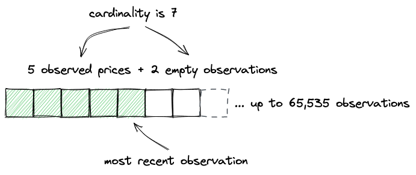
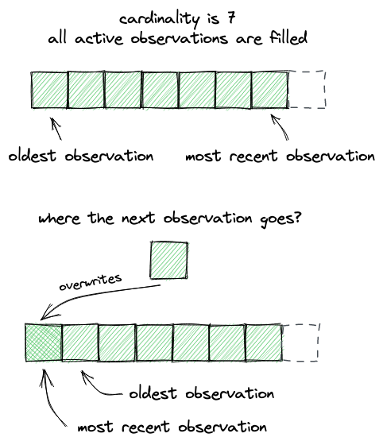
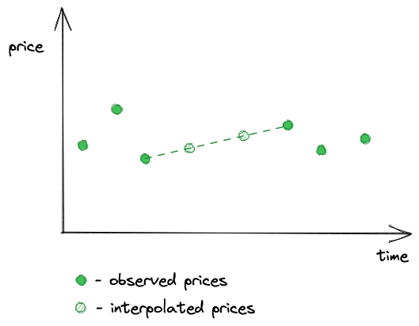

价格预言机
我们将要添加到我们的DEX中的最后一个机制是价格预言机。尽管它对DEX来说并不是必需的（有些DEX并不实现价格预言机），但它仍然是Uniswap的一个重要特性，也是值得学习的有趣内容。
什么是价格预言机？
价格预言机是一种为区块链提供资产价格的机制。由于区块链是孤立的生态系统，没有直接查询外部数据的方法，例如通过API从中心化交易所获取资产价格。另一个非常困难的问题是数据的有效性和真实性：当从交易所获取价格时，你如何知道它们是真实的？你必须信任数据源。但互联网通常不安全，有时价格可能被操纵，DNS记录可能被劫持，API服务器可能宕机等。所有这些困难都需要解决，以便我们能够获得可靠和正确的链上价格。
解决上述问题的第一个可行方案之一是Chainlink。Chainlink运行一个去中心化的预言机网络，通过API从中心化交易所获取资产价格，对它们进行平均，并以防篡改的方式在链上提供。Chainlink是一组合约，其中有一个状态变量，即资产价格，任何人（任何其他合约或用户）都可以读取，但只能由预言机写入。
这是看待价格预言机的一种方式。还有另一种方式。
如果我们有原生的链上交易所，为什么还需要从外部获取价格？这就是Uniswap价格预言机的工作原理。由于套利和高流动性，Uniswap上的资产价格接近中心化交易所的价格。因此，我们可以使用Uniswap作为资产价格的真实来源，而不是使用中心化交易所，我们也不需要解决与将数据传递到链上相关的问题（我们也不需要信任数据提供者）。
Uniswap价格预言机如何工作
Uniswap只是保留了所有先前交换价格的记录。就是这样。但是，Uniswap不是跟踪实际价格，而是跟踪累积价格，即池合约历史中每秒价格的总和。
这种方法允许我们通过简单地获取这两个时间点（和）的累积价格（和），将一个从另一个中减去，然后除以两个点之间的秒数，来找到两个时间点之间的时间加权平均价格：
这是Uniswap V2的工作方式。在V3中，略有不同。累积价格是当前的tick（即价格的）：
并且不是平均价格，而是取几何平均值：
要找到两个时间点之间的时间加权几何平均价格，我们取这两个时间点的累积值，将一个从另一个中减去，除以两个点之间的秒数，然后计算：
Uniswap V2没有存储历史累积价格，这需要参考第三方区块链数据索引服务来找到历史价格，以计算平均价格。另一方面，Uniswap V3允许存储多达65,535个历史累积价格，这使得计算任何历史时间加权几何价格变得更加容易。
价格操纵缓解
另一个重要的话题是价格操纵以及Uniswap如何缓解它。
理论上可以操纵池的价格以获得优势：例如，购买大量代币以提高其价格，并在使用Uniswap价格预言机的第三方DeFi服务上获利，然后将代币交易回真实价格。为了缓解这种攻击，Uniswap在区块结束时跟踪价格，即在区块的最后一笔交易之后。这消除了区块内价格操纵的可能性。
从技术上讲，Uniswap预言机中的价格在每个区块开始时更新，每个价格在区块的第一次交换之前计算。
价格预言机实现
好的，让我们开始编码。
观察和基数
我们将从创建Oracle库合约和Observation结构开始：
// src/lib/Oracle.sol
library Oracle {
struct Observation {
uint32 timestamp;
int56 tickCumulative;
bool initialized;
}
...
}
观察是存储记录价格的槽位。它存储一个价格、记录该价格的时间戳，以及当观察被激活时设置为true的initialized标志（默认情况下并非所有观察都被激活）。一个池合约可以存储多达65,535个观察：
// src/UniswapV3Pool.sol
contract UniswapV3Pool is IUniswapV3Pool {
using Oracle for Oracle.Observation[65535];
...
Oracle.Observation[65535] public observations;
}
然而，由于存储如此多的Observation实例需要大量的gas（有人必须为将每个实例写入合约存储付费），默认情况下，一个池只能存储1个观察，每次记录新价格时都会覆盖它。观察的数量，即观察的基数，可以随时由愿意为此付费的任何人增加。为了管理基数，我们需要一些额外的状态变量：
...
struct Slot0 {
// Current sqrt(P)
uint160 sqrtPriceX96;
// Current tick
int24 tick;
// Most recent observation index
uint16 observationIndex;
// Maximum number of observations
uint16 observationCardinality;
// Next maximum number of observations
uint16 observationCardinalityNext;
}
...
-
observationIndex跟踪最新观察的索引； -
observationCardinality跟踪已激活的观察数量； -
observationCardinalityNext跟踪观察数组可以扩展到的下一个基数。
观察存储在一个固定长度的数组中，当保存新的观察且observationCardinalityNext大于observationCardinality时（这表示基数可以扩展），该数组会扩展。如果数组无法扩展（下一个基数值等于当前值），最旧的观察会被覆盖，即观察存储在索引0处，下一个存储在索引1处，依此类推。
当创建池时，observationCardinality和observationCardinalityNext被设置为1：
// src/UniswapV3Pool.sol
contract UniswapV3Pool is IUniswapV3Pool {
function initialize(uint160 sqrtPriceX96) public {
...
(uint16 cardinality, uint16 cardinalityNext) = observations.initialize(
_blockTimestamp()
);
slot0 = Slot0({
sqrtPriceX96: sqrtPriceX96,
tick: tick,
observationIndex: 0,
observationCardinality: cardinality,
observationCardinalityNext: cardinalityNext
});
}
}
// src/lib/Oracle.sol
library Oracle {
...
function initialize(Observation[65535] storage self, uint32 time)
internal
returns (uint16 cardinality, uint16 cardinalityNext)
{
self[0] = Observation({
timestamp: time,
tickCumulative: 0,
initialized: true
});
cardinality = 1;
cardinalityNext = 1;
}
...
}
写入观察
在swap函数中，当当前价格发生变化时，一个观察会被写入观察数组：
// src/UniswapV3Pool.sol
contract UniswapV3Pool is IUniswapV3Pool {
function swap(...) public returns (...) {
...
if (state.tick != slot0_.tick) {
(
uint16 observationIndex,
uint16 observationCardinality
) = observations.write(
slot0_.observationIndex,
_blockTimestamp(),
slot0_.tick,
slot0_.observationCardinality,
slot0_.observationCardinalityNext
);
(
slot0.sqrtPriceX96,
slot0.tick,
slot0.observationIndex,
slot0.observationCardinality
) = (
state.sqrtPriceX96,
state.tick,
observationIndex,
observationCardinality
);
}
...
}
}
注意，这里观察到的tick是slot0_.tick（而不是state.tick），即交换前的价格！它在下一个语句中用新价格更新。这就是我们之前讨论的价格操纵缓解措施：Uniswap在区块中的第一笔交易之前和前一个区块的最后一笔交易之后跟踪价格。
还要注意，每个观察都由_blockTimestamp()标识，即当前区块的时间戳。这意味着如果当前区块已经有了观察，则不会记录价格。如果当前区块没有观察（即这是区块中的第一次交换），则会记录价格。这是价格操纵缓解机制的一部分。
// src/lib/Oracle.sol
function write(
Observation[65535] storage self,
uint16 index,
uint32 timestamp,
int24 tick,
uint16 cardinality,
uint16 cardinalityNext
) internal returns (uint16 indexUpdated, uint16 cardinalityUpdated) {
Observation memory last = self[index];
if (last.timestamp == timestamp) return (index, cardinality);
if (cardinalityNext > cardinality && index == (cardinality - 1)) {
cardinalityUpdated = cardinalityNext;
} else {
cardinalityUpdated = cardinality;
}
indexUpdated = (index + 1) % cardinalityUpdated;
self[indexUpdated] = transform(last, timestamp, tick);
}
在这里，我们看到当当前区块已经有观察时，会跳过一个观察。但是，如果没有这样的观察，我们就会保存一个新的观察，并在可能的情况下尝试扩展基数。模运算符（%）确保观察索引保持在范围内，并在达到上限时重置为0。
现在，让我们看看transform函数：
function transform(
Observation memory last,
uint32 timestamp,
int24 tick
) internal pure returns (Observation memory) {
uint56 delta = timestamp - last.timestamp;
return
Observation({
timestamp: timestamp,
tickCumulative: last.tickCumulative +
int56(tick) *
int56(delta),
initialized: true
});
}
我们在这里计算的是累积价格：当前的tick乘以自上次观察以来的秒数，然后加到上一次的累积价格上。
增加基数
现在让我们看看如何扩展基数。
任何人在任何时候都可以增加池的观察基数，并支付所需的gas费用。为此，我们将在Pool合约中添加一个新的公共函数：
// src/UniswapV3Pool.sol
function increaseObservationCardinalityNext(
uint16 observationCardinalityNext
) public {
uint16 observationCardinalityNextOld = slot0.observationCardinalityNext;
uint16 observationCardinalityNextNew = observations.grow(
observationCardinalityNextOld,
observationCardinalityNext
);
if (observationCardinalityNextNew != observationCardinalityNextOld) {
slot0.observationCardinalityNext = observationCardinalityNextNew;
emit IncreaseObservationCardinalityNext(
observationCardinalityNextOld,
observationCardinalityNextNew
);
}
}
以及Oracle中的一个新函数：
// src/lib/Oracle.sol
function grow(
Observation[65535] storage self,
uint16 current,
uint16 next
) internal returns (uint16) {
if (next <= current) return current;
for (uint16 i = current; i < next; i++) {
self[i].timestamp = 1;
}
return next;
}
在grow函数中，我们通过将每个新观察的timestamp字段设置为一些非零值来分配新的观察。注意，self是一个存储变量，给它的元素赋值将更新数组计数器并将值写入合约的存储。
读取观察
我们终于来到了本章最棘手的部分：读取观察。在继续之前，让我们回顾一下观察是如何存储的，以获得更好的理解。
观察存储在一个可以扩展的固定长度数组中：

如上所述，观察预计会溢出：如果新的观察不适合数组，写入将从索引0开始继续，即最旧的观察会被覆盖：

不能保证每个区块都会存储一个观察，因为并非每个区块都发生交换。因此，会有一些区块没有记录观察，而且这种缺失观察的期间可能会很长。当然，我们不希望预言机报告的价格有空缺，这就是为什么我们使用时间加权平均价格（TWAP）的原因——这样我们就可以在没有观察的期间获得平均价格。TWAP允许我们插值价格，即在两个观察之间画一条线——线上的每个点都将是两个观察之间特定时间戳的价格。

因此，读取观察意味着通过时间戳找到观察并插值缺失的观察，同时考虑到观察数组允许溢出（例如，最旧的观察可能在数组中排在最新的观察之后）。由于我们不按时间戳索引观察（以节省gas），我们需要使用二分搜索算法进行高效搜索。但并非总是如此。
让我们将其分解为更小的步骤，并从在Oracle中实现observe函数开始：
function observe(
Observation[65535] storage self,
uint32 time,
uint32[] memory secondsAgos,
int24 tick,
uint16 index,
uint16 cardinality
) internal view returns (int56[] memory tickCumulatives) {
tickCumulatives = new int56[](secondsAgos.length);
for (uint256 i = 0; i < secondsAgos.length; i++) {
tickCumulatives[i] = observeSingle(
self,
time,
secondsAgos[i],
tick,
index,
cardinality
);
}
}
该函数接收当前区块时间戳、我们想要获取价格的时间点列表（secondsAgo）、当前tick、观察索引和基数。
接下来看observeSingle函数：
function observeSingle(
Observation[65535] storage self,
uint32 time,
uint32 secondsAgo,
int24 tick,
uint16 index,
uint16 cardinality
) internal view returns (int56 tickCumulative) {
if (secondsAgo == 0) {
Observation memory last = self[index];
if (last.timestamp != time) last = transform(last, time, tick);
return last.tickCumulative;
}
...
}
当请求最新的观察时（0秒过去），我们可以立即返回它。如果它没有在当前区块中记录，我们将其转换以考虑当前区块和当前tick。
如果请求的是较旧的时间点，我们需要在切换到二分搜索算法之前进行几项检查：
-
如果请求的时间点是最后一个观察，我们可以返回最新观察的累积价格；
-
如果请求的时间点在最后一个观察之后，我们可以调用
transform来找到这个点的累积价格，已知最后观察到的价格和当前价格； -
如果请求的时间点在最后一个观察之前，我们必须使用二分搜索。
让我们直接看第三点：
function binarySearch(
Observation[65535] storage self,
uint32 time,
uint32 target,
uint16 index,
uint16 cardinality
)
private
view
returns (Observation memory beforeOrAt, Observation memory atOrAfter)
{
...
该函数接收当前区块时间戳（time）、请求的价格点时间戳（target），以及当前的观察索引和基数。它返回请求的时间点所在的两个观察之间的范围。
为了初始化二分搜索算法，我们设置边界：
uint256 l = (index + 1) % cardinality; // oldest observation
uint256 r = l + cardinality - 1; // newest observation
uint256 i;
回想一下，观察数组预计会溢出，这就是为什么我们在这里使用模运算符。
然后我们启动一个无限循环，在其中检查范围的中间点：如果它没有初始化（没有观察），我们继续下一个点：
while (true) {
i = (l + r) / 2;
beforeOrAt = self[i % cardinality];
if (!beforeOrAt.initialized) {
l = i + 1;
continue;
}
...
如果该点已初始化，我们将其称为我们希望请求的时间点所在范围的左边界。然后我们尝试找到右边界（atOrAfter）：
...
atOrAfter = self[(i + 1) % cardinality];
bool targetAtOrAfter = lte(time, beforeOrAt.timestamp, target);
if (targetAtOrAfter && lte(time, target, atOrAfter.timestamp))
break;
...
如果我们找到了边界，我们就返回它们。如果没有，我们继续搜索：
...
if (!targetAtOrAfter) r = i - 1;
else l = i + 1;
}
在找到请求的时间点所属的观察范围后，我们需要计算请求时间点的价格：
// function observeSingle() {
...
uint56 observationTimeDelta = atOrAfter.timestamp -
beforeOrAt.timestamp;
uint56 targetDelta = target - beforeOrAt.timestamp;
return
beforeOrAt.tickCumulative +
((atOrAfter.tickCumulative - beforeOrAt.tickCumulative) /
int56(observationTimeDelta)) *
int56(targetDelta);
...
这就像找到范围内的平均变化率，并将其乘以范围下限和我们需要的时间点之间经过的秒数一样简单。这就是我们之前讨论的插值。
我们在这里需要实现的最后一件事是Pool合约中的一个公共函数，用于读取和返回观察：
// src/UniswapV3Pool.sol
function observe(uint32[] calldata secondsAgos)
public
view
returns (int56[] memory tickCumulatives)
{
return
observations.observe(
_blockTimestamp(),
secondsAgos,
slot0.tick,
slot0.observationIndex,
slot0.observationCardinality
);
}
解释观察
现在让我们看看如何解释观察。
我们刚刚添加的observe函数返回一个累积价格数组，我们想知道如何将它们转换为实际价格。我将在observe函数的测试中演示这一点。
在测试中，我在不同方向和不同区块上进行了多次交换：
function testObserve() public {
...
pool.increaseObservationCardinalityNext(3);
vm.warp(2);
pool.swap(address(this), false, swapAmount, sqrtP(6000), extra);
vm.warp(7);
pool.swap(address(this), true, swapAmount2, sqrtP(4000), extra);
vm.warp(20);
pool.swap(address(this), false, swapAmount, sqrtP(6000), extra);
...
vm.warp是Foundry提供的一个作弊码：它前进到具有指定时间戳的区块。2、7、20 - 这些是区块时间戳。
第一次交换在时间戳为2的区块进行，第二次在时间戳为7的区块进行，第三次在时间戳为20的区块进行。然后我们可以读取观察：
...
secondsAgos = new uint32[](4);
secondsAgos[0] = 0;
secondsAgos[1] = 13;
secondsAgos[2] = 17;
secondsAgos[3] = 18;
int56[] memory tickCumulatives = pool.observe(secondsAgos);
assertEq(tickCumulatives[0], 1607059);
assertEq(tickCumulatives[1], 511146);
assertEq(tickCumulatives[2], 170370);
assertEq(tickCumulatives[3], 85176);
...
-
最早观察到的价格是0，这是池部署时设置的初始观察。然而，由于基数设置为3，我们进行了3次交换，它被最后一次观察覆盖了。
-
在第一次交换期间，观察到tick 85176，这是池的初始价格——回想一下，观察的是交换前的价格。因为第一个观察被覆盖了，所以这现在是最旧的观察。
-
下一个返回的累积价格是170370，即
85176 + 85194。前者是前一个累加器值，后者是第一次交换后在第二次交换期间观察到的价格。 -
下一个返回的累积价格是511146，即
(511146 - 170370) / (17 - 13) = 85194，这是第二次和第三次交换之间的累积价格。 -
最后，最近的观察是1607059，即
(1607059 - 511146) / (20 - 7) = 84301，这约等于4581 USDC/ETH，是第二次交换后在第三次交换期间观察到的价格。
这里有一个涉及插值的例子：请求的时间点不是交换的时间点：
secondsAgos = new uint32[](5);
secondsAgos[0] = 0;
secondsAgos[1] = 5;
secondsAgos[2] = 10;
secondsAgos[3] = 15;
secondsAgos[4] = 18;
tickCumulatives = pool.observe(secondsAgos);
assertEq(tickCumulatives[0], 1607059);
assertEq(tickCumulatives[1], 1185554);
assertEq(tickCumulatives[2], 764049);
assertEq(tickCumulatives[3], 340758);
assertEq(tickCumulatives[4], 85176);
这得到的价格是：4581.03、4581.03、4747.6和5008.91，这些是请求的区间内的平均价格。
以下是如何在Python中计算这些值：
vals = [1607059, 1185554, 764049, 340758, 85176] secs = [0, 5, 10, 15, 18] [1.0001**((vals[i] - vals[i+1]) / (secs[i+1] - secs[i])) for i in range(len(vals)-1)]